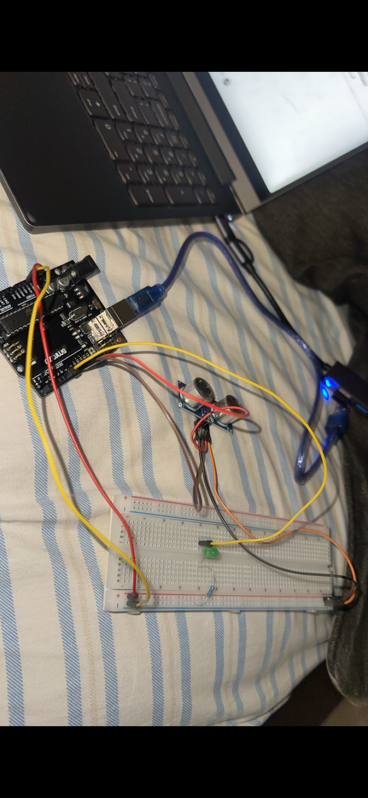

Measure
The ultrasonic sensor checks the distance between the user and the screen.
Personal engineering project · Distance reminder
I wired an ultrasonic sensor to a microcontroller and an LED. When the distance drops below a set threshold, the light turns on.
I have poor eyesight and astigmatism, and I like gaming. When I’m concentrating, I tend to lean towards the monitor without noticing. I wanted a reminder I wouldn’t have to keep thinking about.
The prototype measures distance and switches on an LED when I get too close. I built it as a personal habit reminder. It doesn’t measure eye health or treat a condition.
I connected the sensor to a microcontroller and breadboard circuit, then tuned the distance threshold and alert response through repeated tests.


The ultrasonic sensor checks the distance between the user and the screen.
The microcontroller compares the reading with the distance threshold.
The LED gives a clear visual cue to move back and reset the habit.
This is an educational prototype and personal reminder, not a medical device or a substitute for professional eye care.
These short clips show the prototype running through two setups while I checked the sensor reading and alert light.
The circuit responds to distance changes in the test clips above. My next step would be to record readings against measured distances, check different seating angles, and find out whether brief movements trigger unnecessary alerts. I’d also like to move it off the breadboard and into a small monitor mount.